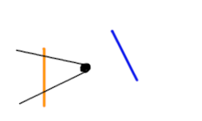
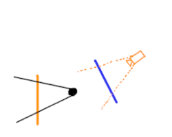
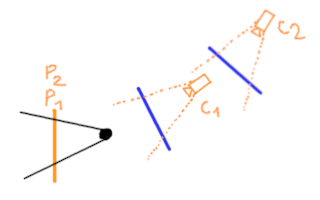
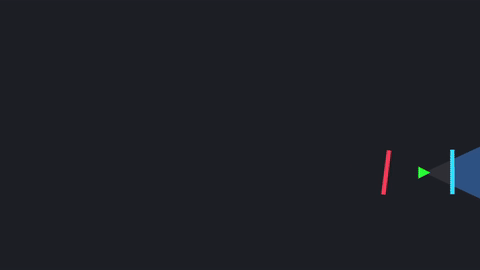
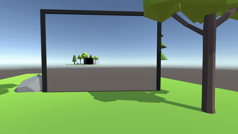
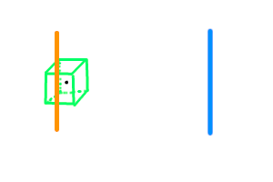
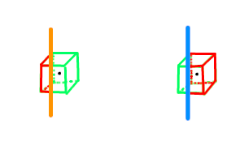
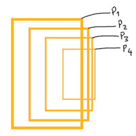
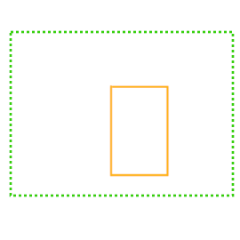
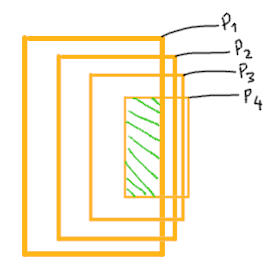

Cách làm Portal mechanic trong HTML Canvas engine
Portal mechanic trong game Portal của Valve là một thứ khá là thú vị và ko kém phần challenging để implement nếu bạn là 1 game dev. Đã có nhiều video về chủ đề này, cái mình thấy hay nhất là của Sebastian Lague. Mình đã viết 1 3D graphics engine (thuật ngữ đúng là cpu rasterizer/software rasterizer) trong HTML Canvas rồi thì sao mình không implement thử Portal mechanic vào nó luôn nhỉ 😳 Đó chính là thứ mà mình hướng đến trong blog này. Nguồn ảnh: gamingbolt, Game: Portal 2 (Valve).
Nguồn ảnh: gamingbolt, Game: Portal 2 (Valve).
Cũng như series blogs Rasterzier, bạn có thể xem diff với phiên bản trước ở nút dưới. OK, trước khi làm gì liên quan tới Portal. Bạn cần phải biết là khi bạn nhìn vào portal, thứ bạn nhìn thấy chỉ là 1 texture hiển thị góc nhìn ở portal bên kia, chứ không thật sự là đang "xuyên không", everything is an illusion. Portal thật ra là 1 quad có texture và có effect viền, that's it, cái magic là ở việc ta hiển thị gì lên texture đó và việc xử lý khi vật thể hoặc player đi qua nó.
Như vậy, trước tiên ta cần tạo một class Quad mới, kế thừa từ Mesh. Cũng đơn giản, ta copy lại mặt back của cube (để pháp tuyến của nó hướng theo trục Z thế giới):
class Quad extends Mesh {
constructor() {
super(Quad.generateInitialTriangles());
}
static generateInitialTriangles() {
let tris = [];
let color = new Color(255, 255, 255);
tris.push(
new Triangle(
[new Vector3(0.5, -0.5, 0), new Vector3(0.5, 0.5, 0), new Vector3(-0.5, 0.5, 0)],
[new Vector2(1, 0), new Vector2(1, 1), new Vector2(0, 1)],
color,
),
);
tris.push(
new Triangle(
[new Vector3(0.5, -0.5, 0), new Vector3(-0.5, 0.5, 0), new Vector3(-0.5, -0.5, 0)],
[new Vector2(1, 0), new Vector2(0, 1), new Vector2(0, 0)],
color,
),
);
return tris;
}
}let quadMesh = new Quad();
...
let portal1 = new GameObject(new Vector3(-3, 3, 0), new Vector3(0, 180, 0), new Vector3(3, 6, 3), new Color(255, 201, 94), quadMesh);
let portal2 = new GameObject(new Vector3(3, 3, 0), new Vector3(0, 180, 0), new Vector3(3, 6, 3), new Color(17, 155, 255), quadMesh);
...
function update(time = performance.now()) {
...
objectTris.push(...portal1.getTransformedTriangles());
objectTris.push(...portal2.getTransformedTriangles());
...
}1. Portal sẽ hiển thị gì?
a. Ý tưởng cơ bản
Bạn hãy thử suy nghĩ với trường hợp như sau:
Ta biết Portal sẽ hiển thị theo kiểu 1 "cửa sổ" với góc nhìn ở portal bên kia. Nghĩa là ta phải giả sử 1 player khác đang đứng đằng sau Portal xanh, player ảo đó thấy cái gì, thì Portal cam sẽ hiển thị cái đó. Với engine chúng ta thì 1 player chỉ là 1 camera, và player ảo này đang phục vụ cho portal cam, nên mình minh họa camera màu cam:


Câu hỏi tiếp theo ta cần trả lời là: Vị trí và góc xoay của camera cam sẽ như thế nào?
Về vị trí, thì bạn nhìn những hình trên cũng sẽ mường tượng được nó sẽ thế nào. Để dễ suy nghĩ, bạn thử kéo cả Portal cam và người chơi tới Portal xanh sao cho Portal cam trùng với portal xanh, như gif dưới đây:

Ngược lại nhưng mà chỉ ngược trục x và z local, chứ không ngược trục y. Cái này mình có thể giải thích theo kiểu này: Khi bạn đi qua portal thì khi qua tới bên kia, độ cao local của bạn vẫn như cũ chứ không có lí do gì mà bị ngược lại.
Về góc xoay thì nó y hệt vị trí, ngược trục x, z local và không ngược trục y.
Về việc tính toán cụ thể, mình vẽ thêm 2 vector đại diện cho vị trí local (màu cyan) và góc xoay local (màu tím):

- Tìm vector cyan ở portal cam (vector từ portal cam đến player)
- Chuyển vector trên từ world thành local của portal cam
- Chuyển vector trên từ local thành world của portal xanh
- Xoay vector trên 180 độ quanh trục y local của portal xanh
- Lấy vị trí portal xanh + vector trên => vị trí camera cam
- Chuyển Quaternion rotation của player từ world thành local của portal cam
- Chuyển Quaternion trên từ local thành world của portal xanh
- Xoay Quaternion trên 180 độ quanh trục y local của portal xanh => rotation của camera cam
b. Implement việc update camera của portal
Oke vẽ vời tưởng tượng các thứ đã đủ, bây giờ ta cần phải hiện thực hóa 🥶 Đầu tiên thì ta thấy là ta cần phải tạo một class riêng cho Portal rồi đấy.Cũng giống như GameObject, class Portal cũng có pos, eulerAngles, scale, color, ngoài ra cần thêm một trường name để sau này dễ phân biệt 2 portal. Trong constructor, ngoài set các thứ truyền vào thì mình còn phải tạo một camera khác của riêng portal đó (như những gì chúng ta đã bàn), và có camera thì cũng cần có thêm một Rasterizer đi kèm. Như vậy thì constructor của class Portal sẽ như sau:
class Portal {
constructor(name, pos, eulerAngles, scale, color) {
this.name = name;
this.pos = pos;
this.rotation = Quaternion.buildQuaternionEuler(eulerAngles);
this.scale = scale;
let portalQuadMesh = new Quad();
this.quad = new GameObject(pos, eulerAngles, scale, color, portalQuadMesh, null);
this.rasterizer = new Rasterizer();
this.camera = new Camera(pos, eulerAngles, 8, 0.2);
}
}runRenderPipeline(objectTris) {
let tris = [];
for (let tri of objectTris) {
let cloneTri = tri.clone(); // clone ra cho an toàn
tris.push(cloneTri);
}
this.rasterizer.clearScreen();
let viewMatPortal = this.camera.getViewMatrix(); // camera của portal này
let visibleTris = [];
for (let tri of tris) {
if (Vector3.dot(tri.getNormal(), Vector3.sub(tri.getCenter(), this.camera.pos)) < 0) {
tri.mulMat4x4(viewMatPortal);
visibleTris.push(...tri.clipAgainstPlane(nearPlane));
}
}
for (let tri of visibleTris) {
tri.mulMat4x4(projectionMatrix);
tri.perspectiveDivide();
}
this.rasterizer.processTriangles(visibleTris);
}- Set reference tới portal kia
- Chuyển 1 vector từ world về local của Portal và ngược lại
- Chuyển 1 rotation từ world về local của Portal và ngược lại
setOtherPortal(otherPortal) {
this.otherPortal = otherPortal;
}Về việc chuyển vector, ở Unity thì có hàm TransformDirection và InverseTransformDirection. Ở engine chúng ta thì có gì?
Thật ra hàm
Quaternion.rotateVector chính là để chuyển từ local ra world. Vì bản chất Quaterninon là một phép xoay, mỗi GameObject có 1 Quaternion rotation,
vai trò của rotation là để xoay mọi vector local thành vector world.Thế là local sang world đã xong, bây giờ world sang local ta cần 1 hàm "inverseRotateVector" nào đó. Và bạn sẽ ngạc nhiên bởi sự đơn giản của nó, rotateVector là \(pvp^*\), thì inverseRotateVector chỉ là \(p^*vp\) 😳 (tbh I don't even know how it works intuitively, let's just use it):
class Quaternion {
...
inverseRotateVector(v) {
const qVec = new Quaternion(0, v.x, v.y, v.z);
const res = Quaternion.multiply(Quaternion.multiply(this.conjugate(), qVec), this);
return new Vector3(res.b, res.c, res.d);
}
...
}Sau cùng là "chuyển rotation từ world về local" và ngược lại, thì ta chỉ cần dùng phép nhân Quaternion:
- Local ra world thì lấy rotation của Portal nhân với rotation player, simple as that.
- World về local thì ta dùng nghịch đảo của rotation của Portal nhân với rotation player, là "áp dụng phép xoay ngược lại của rotation của Portal lên rotation của player". Và như ta đã biết thì nghịch đảo của 1 Quaternion đơn vị chính là liên hợp của Quaternion đó (xem lại blog Quaternion).
Có hết những công cụ đó rồi, thì hàm của chúng ta sẽ như sau (xem lại ý tưởng ở trên và so sánh):
calculateTransformToOtherPortalTransform(position, rotation) {
// Lấy trục y local của portal kia để làm phép xoay 180 độ quanh nó
let otherPortalUp = this.otherPortal.rotation.rotateVector(Vector3.up).normalize();
let rotate180 = Quaternion.buildQuaternionAxisAngle(otherPortalUp, 180);
// 4 dòng này chính là 5 dòng ý tưởng ở trên, dòng cuối mình gộp 2 ý lại
let worldPositionRelativeToThisPortal = Vector3.sub(position, this.pos);
let localPositionRelativeToThisPortal = this.rotation.inverseRotateVector(worldPositionRelativeToThisPortal);
let worldPositionRelativeToOtherPortal = this.otherPortal.rotation.rotateVector(localPositionRelativeToThisPortal);
let newPos = Vector3.add(this.otherPortal.pos, rotate180.rotateVector(worldPositionRelativeToOtherPortal));
// 3 dòng này chính là 3 dòng ý tưởng ở trên
let localRotationRelativeToThisPortal = Quaternion.multiply(this.rotation.conjugate(), rotation);
let worldRotationRelativeToOtherPortal = Quaternion.multiply(this.otherPortal.rotation, localRotationRelativeToThisPortal);
let newRotation = Quaternion.multiply(rotate180, worldRotationRelativeToOtherPortal);
return [newPos, newRotation];
}
updatePortalCameraBaseOnPlayer(playerCameraPos, playerCameraRotation) {
let [cameraPos, cameraRotation] = this.calculateTransformToOtherPortalTransform(playerCameraPos, playerCameraRotation);
this.camera.pos = cameraPos;
this.camera.rotation = cameraRotation;
}Như thế thì nó đã hoạt động đúng rồi, tuy nhiên Portal có camera và rasterizer nhưng không biết nên hiện nó chỗ nào, nên chúng ta tạo tạm 1 canvas để hiện những gì mà camera Portal 1 (cam) thấy:
<canvas id="portal1Canvas" width="400" height="300" style="border: 2px solid #aaa; background: #fff"></canvas>drawCall(canvasCtx = null) {
if (canvasCtx == null)
canvasCtx = ctx;
...
canvasCtx.putImageData(this.imageData, 0, 0);
}const portal1Canvas = document.getElementById("portal1Canvas");
const portal1Ctx = portal1Canvas.getContext("2d");let portal1 = new Portal("Portal 1", new Vector3(-3, 3, 0), new Vector3(0, 180, 0), new Vector3(3, 6, 3), new Color(255, 201, 94));
let portal2 = new Portal("Portal 2", new Vector3(3, 3, 0), new Vector3(0, 180, 0), new Vector3(3, 6, 3), new Color(17, 155, 255));
portal1.setOtherPortal(portal2);
portal2.setOtherPortal(portal1);function update(time = performance.now()) {
...
camera.updateMovement(dt, keyStates);
// update vị trí camera player trước mới update camera của 2 portal
portal1.updatePortalCameraBaseOnPlayer(camera.pos, camera.rotation);
portal2.updatePortalCameraBaseOnPlayer(camera.pos, camera.rotation);
const viewMat = camera.getViewMatrix();
let objectTris = [];
objectTris.push(...ground.getTransformedTriangles());
objectTris.push(...portal1.quad.getTransformedTriangles()); // <-------- thêm .quad
objectTris.push(...portal2.quad.getTransformedTriangles()); // <-------- thêm .quad
portal1.runRenderPipeline(objectTris);
portal2.runRenderPipeline(objectTris);
...
portal1.rasterizer.drawCall(portal1Ctx); // <---------- portal1 drawCall lên portal1Ctx
rasterizer.processTriangles(visibleTris);
rasterizer.drawCall();
requestAnimationFrame(update);
}let playerCubeTexture = new Texture("https://raw.githubusercontent.com/hachihao792001/hachihao792001.github.io/refs/heads/main/blogs/graphics3D/images/textures/wheatly.png");
...
let playerCube = new GameObject(camera.pos, camera.rotation, new Vector3(0.5, 0.5, 0.5), new Color(255, 255, 255),
new ObjMesh("https://raw.githubusercontent.com/hachihao792001/hachihao792001.github.io/refs/heads/main/blogs/graphics3D/models/grass_block.obj"), playerCubeTexture);
...
function update(time = performance.now()) {
...
playerCube.pos = camera.pos;
playerCube.rotation = camera.rotation;
...
}let portal1 = new Portal("Portal 1", new Vector3(-3, 3, -3), new Vector3(0, 180, 0), new Vector3(3, 6, 3), new Color(255, 201, 94));
let portal2 = new Portal("Portal 2", new Vector3(3, 3, -3), new Vector3(0, 180, 0), new Vector3(3, 6, 3), new Color(17, 155, 255));Hiện tại trong hàm update ta có làm những thứ sau:
- Tính delta time, tính fps
- Update vị trí, rotation của mọi object trong thế giới
- Chuẩn bị các triangles của các object ở object space
- Render hình ảnh cho portal
- Đưa các triangles về view space, backface culling, near plane clipping
- Đưa các triangles về clip space (nhân projection matrix và chia z)
- Clear screen, đưa triangles cho rasteriezer xử lí và gọi drawCall
function updateGameObjectTransforms() {
playerCube.pos = camera.pos;
playerCube.rotation = camera.rotation;
camera.updateMovement(dt, keyStates);
portal1.updatePortalCameraBaseOnPlayer(camera.pos, camera.rotation);
portal2.updatePortalCameraBaseOnPlayer(camera.pos, camera.rotation);
}
function gameObjectToWorldSpaceTriangles() {
let objectTris = [];
objectTris.push(...ground.getTransformedTriangles());
objectTris.push(...playerCube.getTransformedTriangles());
objectTris.push(...portal1.quad.getTransformedTriangles());
objectTris.push(...portal2.quad.getTransformedTriangles());
return objectTris;
}
function portalRenderOperations(objectTris) {
portal1.runRenderPipeline(objectTris);
portal2.runRenderPipeline(objectTris);
}
function worldSpaceToViewSpace(objectTris) {
const viewMat = camera.getViewMatrix();
let visibleTris = [];
for (let tri of objectTris) {
if (Vector3.dot(tri.getNormal(), Vector3.sub(tri.getCenter(), camera.pos)) < 0) {
tri.mulMat4x4(viewMat);
visibleTris.push(...tri.clipAgainstPlane(nearPlane));
}
}
return visibleTris;
}
function viewSpaceToClipSpace(visibleTris) {
for (let tri of visibleTris) {
tri.mulMat4x4(projectionMatrix);
tri.perspectiveDivide();
}
}
function rasterize(visibleTris) {
portal1.rasterizer.drawCall(portal1Ctx);
rasterizer.clearScreen();
rasterizer.rasterizeClipSpaceTriangles(visibleTris); // đổi tên processTriangles thành rasterizeClipSpaceTriangles
rasterizer.drawCall();
}Như vậy hàm update sẽ thành:
function update(time = performance.now()) {
dt = (time - lastTime) / 1000;
lastTime = time;
fpsTimeCounter += dt;
frames++;
if (fpsTimeCounter >= 1) {
fpsInfo.textContent = `FPS: ${frames}`;
frames = 0;
fpsTimeCounter = 0;
}
updateGameObjectTransforms();
let objectTris = gameObjectToWorldSpaceTriangles();
portalRenderOperations(objectTris);
let visibleTris = worldSpaceToViewSpace(objectTris);
viewSpaceToClipSpace(visibleTris);
rasterize(visibleTris);
requestAnimationFrame(update);
}Full code, nhìn lên tí bạn sẽ thấy chính bạn ở canvas của portal 1.
c. Implement việc render lên texture của Portal
Ta đã biết là Portal nên hiển thị gì rồi, đã render được nó ra canvas riêng rồi, giờ là tới lúc thật sự áp cái đó vào texture của Portal.Bạn nhớ lại blog về Texture, với texture bình thường thì với mỗi pixel ta sẽ cần phải tìm tọa độ UV của nó bằng barycentric coords với 3 đỉnh tam giác. Tuy nhiên, texture của portal đơn giản hơn nhiều, tại vì cái mà ta render ở canvas bên dưới khớp hoàn toàn với những gì mà portal sẽ hiển thị, chỉ là được cắt ra thôi. Như vậy với mỗi pixel thì ta lấy lại y hệt tọa độ pixel đó ở canvas bên dưới là xong.
Việc bây giờ cần làm là thay vì rasterize những gì mà camera Portal thấy ra canvas, thì rasterize nó ra một Texture riêng, kỹ thuật này chính là Render Texture trong Unity.
Đầu tiên ta tạo một biến renderTexture trong class Portal, là một texture rỗng có width height bằng với canvas, biến pixels phải có cùng kiểu với ImageData.data là Uint8ClampedArray:
class Portal {
constructor(name, pos, eulerAngles, scale, color) {
...
this.renderTexture = new Texture();
this.renderTexture.width = canvas.width;
this.renderTexture.height = canvas.height;
this.renderTexture.pixels = new Uint8ClampedArray(canvas.width * canvas.height * 4);
...
}
}class Texture {
constructor(url) {
this.pixels = null;
this.width = 0;
this.height = 0;
if (url) this.load(url); // <--------------
}
}class Portal {
...
updateTextureForQuad() {
let index = 0;
for (let y = 0; y < canvas.height; y++) {
for (let x = 0; x < canvas.width; x++) {
const c = this.rasterizer.screenBuffer[y][x];
this.renderTexture.pixels[index++] = c.r;
this.renderTexture.pixels[index++] = c.g;
this.renderTexture.pixels[index++] = c.b;
this.renderTexture.pixels[index++] = 255;
}
}
this.quad.texture = this.renderTexture;
}
...
}
...
function portalRenderOperations(objectTris) {
portal1.runRenderPipeline(objectTris);
portal1.updateTextureForQuad();
portal2.runRenderPipeline(objectTris);
portal2.updateTextureForQuad();
}Nghĩa là, ta phải thêm reference tới Portal ngay từ constructor của tam giác, và các hàm có clone tam giác:
class Triangle {
constructor(vertices = [], uv = [], color = new Color(255, 255, 255), portal = null) {
...
this.portal = portal;
}
clone() {
...
tri.portal = this.portal;
return tri;
}
...
clipAgainstPlane(plane) {
...
if (frontPoints.length == 3) {
outTris.push(this.clone());
} else if (frontPoints.length == 1 && behindPoints.length == 2) {
...
outTri.portal = this.portal;
outTris.push(outTri);
} else if (frontPoints.length == 2 && behindPoints.length == 1) {
...
outTri1.portal = this.portal;
outTris.push(outTri1);
...
outTri2.portal = this.portal;
outTris.push(outTri2);
}
return outTris;
}
}class Quad extends Mesh {
constructor(portal = null) {
super(Quad.generateInitialTriangles(portal)); // <-------------------
}
static generateInitialTriangles(portal) {
let tris = [];
let color = new Color(255, 255, 255);
tris.push(
new Triangle(
[new Vector3(0.5, -0.5, 0), new Vector3(0.5, 0.5, 0), new Vector3(-0.5, 0.5, 0)],
[new Vector2(1, 0), new Vector2(1, 1), new Vector2(0, 1)],
color, portal // <-------------------
),
);
tris.push(
new Triangle(
[new Vector3(0.5, -0.5, 0), new Vector3(-0.5, 0.5, 0), new Vector3(-0.5, -0.5, 0)],
[new Vector2(1, 0), new Vector2(0, 1), new Vector2(0, 0)],
color, portal // <-------------------
),
);
return tris;
}
}this:
class Portal {
constructor(name, pos, eulerAngles, scale, color) {
...
let portalQuadMesh = new Quad(this);
this.quad = new GameObject(pos, eulerAngles, scale, color, portalQuadMesh, null);
...
}
...
}rasterizeClipSpaceTriangles(tris) {
...
if (tri.texture && tri.texture.pixels) {
if (tri.portal) {
lightIntensity = 1; // ánh sáng không tác động lên portal
const texIndex = (y * tri.texture.width + x) * 4;
texColor = new Color(tri.texture.pixels[texIndex], tri.texture.pixels[texIndex + 1], tri.texture.pixels[texIndex + 2]);
} else {
... // đoạn code tính theo barycentric coords cũ
}
}
...
}Cái này mình quy định sớm luôn, có 4 cái cạnh này thì mình đẩy 4 cạnh này về sau sao cho cái quad portal khớp với viền trước, còn quad đằng sau sẽ đẩy ra khớp với viền sau (hope that make sense):
class Portal {
constructor(name, pos, eulerAngles, scale, color) {
...
let portalEdgeThickness = 0.2;
let portalBack = this.rotation.rotateVector(Vector3.back).normalize(); // nhớ thêm Vector3.back, trước giờ ko có 😅
let backOffset = Vector3.mul(portalBack, portalEdgeThickness / 2); // offset để đẩy 4 cạnh về sau, 1 nửa thickness
let portalUp = this.rotation.rotateVector(Vector3.up);
let portalForward = this.rotation.rotateVector(Vector3.forward).normalize();
let portalRight = this.rotation.rotateVector(Vector3.right);
this.topCube = new GameObject(
Vector3.add(pos, Vector3.add(Vector3.mul(portalUp, this.scale.y / 2 + portalEdgeThickness / 2), backOffset)),
eulerAngles,
new Vector3(scale.x, portalEdgeThickness, portalEdgeThickness),
color,
cubeMesh,
);
this.bottomCube = new GameObject(
Vector3.add(pos, Vector3.add(Vector3.mul(portalUp, -this.scale.y / 2 - portalEdgeThickness / 2), backOffset)),
eulerAngles,
new Vector3(scale.x, portalEdgeThickness, portalEdgeThickness),
color,
cubeMesh,
);
this.leftCube = new GameObject(
Vector3.add(pos, Vector3.add(Vector3.mul(portalRight, -this.scale.x / 2 - portalEdgeThickness / 2), backOffset)),
eulerAngles,
new Vector3(portalEdgeThickness, scale.y + portalEdgeThickness * 2, portalEdgeThickness),
color,
cubeMesh,
);
this.rightCube = new GameObject(
Vector3.add(pos, Vector3.add(Vector3.mul(portalRight, this.scale.x / 2 + portalEdgeThickness / 2), backOffset)),
eulerAngles,
new Vector3(portalEdgeThickness, scale.y + portalEdgeThickness * 2, portalEdgeThickness),
color,
cubeMesh,
);
let normalQuadMesh = new Quad();
this.backQuad = new GameObject(
Vector3.add(pos, Vector3.mul(portalBack, portalEdgeThickness)),
eulerAngles,
new Vector3(scale.x, scale.y, 0.05),
color,
normalQuadMesh,
);
// làm cái quad bình thường rồi xoay ngược lại 180 độ theo chiều y local
this.backQuad.rotation = Quaternion.multiply(Quaternion.buildQuaternionAxisAngle(portalUp, 180), this.backQuad.rotation);
}
...
}class Portal {
...
getAllTransformedTriangles() {
let allTris = [];
allTris.push(...this.quad.getTransformedTriangles());
allTris.push(...this.topCube.getTransformedTriangles());
allTris.push(...this.bottomCube.getTransformedTriangles());
allTris.push(...this.leftCube.getTransformedTriangles());
allTris.push(...this.rightCube.getTransformedTriangles());
allTris.push(...this.backQuad.getTransformedTriangles());
return allTris;
}
...
}
...
function gameObjectToWorldSpaceTriangles() {
let objectTris = [];
objectTris.push(...ground.getTransformedTriangles());
objectTris.push(...playerCube.getTransformedTriangles());
objectTris.push(...portal1.getAllTransformedTriangles());
objectTris.push(...portal2.getAllTransformedTriangles());
return objectTris;
}Cái này khá đơn giản, chỉ cần thêm 1 lần gọi clipAgainstPlane với plane của portal kia. Ta thêm hàm để tìm plane khớp với Portal, tuy nhiên nên lùi cái plane lại 1 tí vì nó sẽ clip luôn với cái quad của portal:
class Portal {
...
getPlane() {
let forward = this.rotation.rotateVector(Vector3.forward);
return new Plane(forward, Vector3.sub(this.pos, Vector3.mul(forward, 0.01)));
}
runRenderPipeline(objectTris) {
...
let viewMatPortal = this.camera.getViewMatrix();
let otherPortalPlane = this.otherPortal.getPlane(); // <---------------
let visibleTris = [];
for (let tri of tris) {
if (Vector3.dot(tri.getNormal(), Vector3.sub(tri.getCenter(), this.camera.pos)) < 0) {
let clippedWithPortalTris = tri.clipAgainstPlane(otherPortalPlane); // <--------------
for (let clippedTri of clippedWithPortalTris) {
clippedTri.mulMat4x4(viewMatPortal);
visibleTris.push(...clippedTri.clipAgainstPlane(nearPlane));
}
}
}
...
}
}2. Đi qua Portal
a. Teleport cơ bản
Hiển thị được Portal đúng đã xong, bây giờ ta phải implement the other half of the illusion, là đi qua được Portal.Đi qua Portal thật ra chỉ là teleport qua Portal bên kia mà sao cho position và rotation so với portal vẫn giữ nguyên, và điều đó ta đã làm với portal camera 😳 Đó là vì sao mình đặt tên hàm là
calculateTransformToOtherPortalTransform, vì nó áp dụng cho mọi thứ mà ta cần giữ nguyên position, rotation
so với portal.Biết được cách teleport rồi, giờ thì sao ta detect được Player có đi qua Portal hay không? Engine ta chưa hề có hệ thống collision gì cả.
Thật ra cũng dễ thôi, trước tiên ta hãy xem Portal như là một mặt phẳng vô tận, là 1 Plane, player sẽ đi qua Portal nếu frame trước player ở trước plane và frame này player ở sau plane, ta cũng đã có sẵn hàm
Plane.isPointInFrontOfPlane() rồi.Nhưng Portal thì không phải một mặt phẳng vô tận, ta cần giới hạn lại chỉ nằm trong khung Portal, tức là chỉ xét việc "đi qua" nếu player nằm ở ngay đằng trước hoặc ngay đằng sau Portal. Ta có thể xác nhận điều này bằng cách lấy vector từ Portal tới vị trí player, chuyển nó từ world về local của Portal, rồi xét giá trị x và y của vector local đó xem có nhỏ hơn 2 kích thước của Portal là xong 😳
Như vậy hàm check ở ngay đằng trước/ngay đằng sau Portal như sau:
isPointDirectlyInFrontOrBackOfPortal(point) {
let worldPointRelativeToThisPortal = Vector3.sub(point, this.pos);
let localPointRelativeToThisPortal = this.rotation.inverseRotateVector(worldPointRelativeToThisPortal);
return Math.abs(localPointRelativeToThisPortal.x) <= this.scale.x / 2 && Math.abs(localPointRelativeToThisPortal.y) <= this.scale.y / 2;
}class Portal {
constructor(name, pos, eulerAngles, scale, color) {
...
this.lastFramePlayerInFrontOfPortal = false;
...
}
...
}calculateTransformToOtherPortalTransform khá gọn:
getPlayerTeleportedTransformIfGoThroughPortal(playerCameraPos, playerCameraRotation) {
let plane = this.getPlane();
let isPlayerInFrontOfPortal = plane.isPointInFrontOfPlane(playerCameraPos);
if (this.lastFramePlayerInFrontOfPortal && !isPlayerInFrontOfPortal && this.isPointDirectlyInFrontOrBackOfPortal(playerCameraPos)) {
this.lastFramePlayerInFrontOfPortal = isPlayerInFrontOfPortal;
let [newPlayerPos, newPlayerRotation] = this.calculateTransformToOtherPortalTransform(playerCameraPos, playerCameraRotation);
return [newPlayerPos, newPlayerRotation];
} else {
this.lastFramePlayerInFrontOfPortal = isPlayerInFrontOfPortal;
return null;
}
}function updateGameObjectTransforms() {
...
let cameraTeleportedTransform = portal1.getPlayerTeleportedTransformIfGoThroughPortal(camera.pos, camera.rotation);
if (cameraTeleportedTransform != null) {
camera.pos = cameraTeleportedTransform[0];
camera.rotation = cameraTeleportedTransform[1];
} else {
cameraTeleportedTransform = portal2.getPlayerTeleportedTransformIfGoThroughPortal(camera.pos, camera.rotation);
if (cameraTeleportedTransform != null) {
camera.pos = cameraTeleportedTransform[0];
camera.rotation = cameraTeleportedTransform[1];
}
}
}Nếu xong rồi thì tất nhiên mình sẽ không hỏi câu như trên 😅 Từ đầu tới giờ ta chỉ cho 2 Portal đứng thẳng khá là lý tưởng, nhưng thực tế game Portal cho phép người chơi bắn vào bất kỳ bề mặt xiêng nào, và khi người chơi đi qua Portal thì game tự động correct lại cho player đứng thẳng. Nếu ta muốn theo đuổi tới cùng thì xử lí các trường hợp đó là một điều không thể tránh khỏi.
b. Thêm khả năng điều khiển Portal
Để test được các trường hợp đó, thay vì set cứng cho Portal rồi chạy lại mỗi lần, thì mình thêm khả năng điều khiển portal luôn.Các phím điều khiển mình để như sau:
- P để đổi Portal đang điều khiển
- I, J, K, L để di chuyển 4 hướng
- U, O để di chuyển lên xuống
- B, N, M để xoay theo trục x, y, z thế giới
<div>
Controlling object:
<span id="controllingObject">Orange portal</span>
</div>const controllingObjectText = document.getElementById("controllingObject");let controllingObject = 0;
...
window.addEventListener("keypress", (e) => {
if (e.key == "p") {
controllingObject = 1 - controllingObject;
controllingObjectText.innerText = controllingObject == 0 ? "Orange portal" : "Blue Portal";
}
});class Portal {
...
setPos(pos) {
this.pos = pos;
this.quad.pos = pos;
let portalEdgeThickness = 0.2;
let portalBack = this.rotation.rotateVector(Vector3.back).normalize();
let backOffset = Vector3.mul(portalBack, portalEdgeThickness / 2);
let portalUp = this.rotation.rotateVector(Vector3.up);
this.topCube.pos = Vector3.add(pos, Vector3.add(Vector3.mul(portalUp, this.scale.y / 2 + portalEdgeThickness / 2), backOffset));
this.bottomCube.pos = Vector3.add(pos, Vector3.add(Vector3.mul(portalUp, -this.scale.y / 2 - portalEdgeThickness / 2), backOffset));
let portalRight = this.rotation.rotateVector(Vector3.right);
this.leftCube.pos = Vector3.add(pos, Vector3.add(Vector3.mul(portalRight, -this.scale.x / 2 - portalEdgeThickness / 2), backOffset));
this.rightCube.pos = Vector3.add(pos, Vector3.add(Vector3.mul(portalRight, this.scale.x / 2 + portalEdgeThickness / 2), backOffset));
this.backQuad.pos = Vector3.add(pos, Vector3.mul(portalBack, portalEdgeThickness));
}
rotate(eulerX, eulerY, eulerZ) {
let q = Quaternion.buildQuaternionEuler(new Vector3(eulerX, eulerY, eulerZ));
this.rotation = Quaternion.multiply(q, this.rotation);
this.quad.rotate(eulerX, eulerY, eulerZ);
this.topCube.rotate(eulerX, eulerY, eulerZ);
this.bottomCube.rotate(eulerX, eulerY, eulerZ);
this.leftCube.rotate(eulerX, eulerY, eulerZ);
this.rightCube.rotate(eulerX, eulerY, eulerZ);
this.backQuad.rotate(eulerX, eulerY, eulerZ);
}
...
}let portal1Pos = new Vector3(-3, 3, -3);
let portal2Pos = new Vector3(3, 3, -3);
let portal1 = new Portal("Portal 1", portal1Pos, new Vector3(0, 180, 0), new Vector3(3, 6, 3), new Color(255, 201, 94));
let portal2 = new Portal("Portal 2", portal2Pos, new Vector3(0, 180, 0), new Vector3(3, 6, 3), new Color(17, 155, 255));let controllingMoveSpeed = 6;
let controllingRotateSpeed = 60;function updateGameObjectTransforms() {
...
let controllingPos = controllingObject == 0 ? portal1Pos : portal2Pos;
let posDelta = Vector3.zero;
if (keyStates["i"]) {
posDelta = Vector3.add(posDelta, Vector3.forward);
}
if (keyStates["k"]) {
posDelta = Vector3.add(posDelta, Vector3.back);
}
if (keyStates["j"]) {
posDelta = Vector3.add(posDelta, Vector3.left);
}
if (keyStates["l"]) {
posDelta = Vector3.add(posDelta, Vector3.right);
}
if (keyStates["u"]) {
posDelta = Vector3.add(posDelta, Vector3.up);
}
if (keyStates["o"]) {
posDelta = Vector3.add(posDelta, Vector3.down);
}
if (!posDelta.equal(Vector3.zero)) {
posDelta.normalize();
posDelta = Vector3.mul(posDelta, dt * controllingMoveSpeed);
let newPos = Vector3.add(controllingPos, posDelta);
controllingPos.x = newPos.x;
controllingPos.y = newPos.y;
controllingPos.z = newPos.z;
}
let rotateEuler = Vector3.zero.clone();
if (keyStates["b"]) {
rotateEuler.x = dt * controllingRotateSpeed;
}
if (keyStates["n"]) {
rotateEuler.y = dt * controllingRotateSpeed;
}
if (keyStates["m"]) {
rotateEuler.z = dt * controllingRotateSpeed;
}
if (!rotateEuler.equal(Vector3.zero)) {
switch (controllingObject) {
case 0:
portal1.rotate(rotateEuler.x, rotateEuler.y, rotateEuler.z);
break;
case 1:
portal2.rotate(rotateEuler.x, rotateEuler.y, rotateEuler.z);
break;
}
}
camera.updateMovement(dt, keyStates);
portal1.setPos(portal1Pos);
portal1.updatePortalCameraBaseOnPlayer(camera.pos, camera.rotation);
portal2.setPos(portal2Pos);
portal2.updatePortalCameraBaseOnPlayer(camera.pos, camera.rotation);
...
}class Vector3 {
...
equal(vec) {
return this.x == vec.x && this.y == vec.y && this.z == vec.z;
}
...
}Btw có thể bạn đã thử quay 2 portal nhìn vào nhau để xem effect đường hầm vô tận, và thấy nó bị kiểu buffer frame trước hay sao đó chứ không thấy đường hầm nào. Don't worry, we'll cross that bridge when we get there.
Như vậy, sau khi teleport, ta phải có một cơ chế nào đó correct roll của người chơi về lại vị trí thẳng đứng, như game Portal.
c. Correct roll của người chơi sau khi teleport
Trước tiên, bạn cần biết là sau khi teleport thì player có vector forward mới. Thì khi bạn correct lại rotation, bạn vẫn phải giữ nguyên vector forward đó, nghĩa là chỉ được phép xoay theo trục vector forward chứ không được xoay theo trục khác.Oke vector forward cố định rồi, thì ta cần biết khi nào roll mới là "thẳng đứng"? Mình nói luôn, roll của người chơi sẽ thẳng đứng khi vector right song song với mặt đất, hoặc vuông góc với mặt phẳng mà chứa cả forward và Vector3.up thế giới.
Để tìm được rotation thẳng đứng đó, thì trong Unity có hàm Quaternion.LookRotation.
Hàm này nhận vào forward và upwards, và trả về một rotation hướng về phía forward, còn upwards được dùng để xác định roll. Cụ thể là nó đảm bảo up của rotation trả về sẽ nằm trên cùng 1 mặt phẳng với forward và upwards, và \(\vec{up} \cdot \vec{upwards} > 0 \) (nhìn chung chung 1 hướng). Để cho rotation được thẳng đứng thì mình chỉ việc truyền Vector3.up vào trong tham số upwards (đỉnh đầu hướng chung chung lên trời) (hope that make sense).
Ý tưởng sẽ như sau:
- Ta có rotation \(p\), ban đầu nó mặc định forward = Vector3.forward, up = Vector3.up
- Tìm phép xoay để xoay từ Vector3.forward sang forward (phải xác định trục)
- Áp dụng phép xoay đó vào \(p\), ra \(p'\)
- \(p'\) có forward' đã đúng, còn up' có thể đã đúng hoặc không, nếu chưa đúng thì đi tiếp.
- Tìm up đúng từ forward và upwards
- Tìm phép xoay để xoay từ up' sang up đúng (theo trục forward)
- Áp dụng phép xoay đó vào \(p\) và trả kết quả
- Tìm phép xoay giữa 2 vector bất kỳ (2)
- Tìm phép xoay giữa 2 vector bất kỳ quanh 1 trục cho trước (6)
- Tìm up đúng từ forward và upwards? (5)
class Vector3 {
static getAxisAndRadianBetween(vec1, vec2) {
let dot = Vector3.dot(vec1, vec2);
let almostOne = 0.9999; // floating point error
if (dot >= almostOne) return [Vector3.up, 0];
if (dot <= -almostOne) return [Vector3.up, Math.PI];
let axis = Vector3.cross(vec1, vec2);
axis.normalize(); // tích có hướng của 2 vector đơn vị có kết quả không phải là vector đơn vị
let angle = -Math.acos(dot); // đổi dấu vì engine là hệ tọa độ tay trái
return [axis, angle];
}
}Còn đối với trường hợp có vector trục cho trước, ta chiếu 2 vector lên mặt phẳng có pháp tuyến là vector trục, dùng lại arccos tích vô hướng sẽ ra góc giữa 2 vector đó. Tuy nhiên ta check xem tích có hướng của 2 vector (trục xoay real) có "nhìn chung chung 1 hướng" với vector trục truyền vào không, và dựa vào đó để kết luận dấu của góc.
class Vector3 {
static getRadianBetweenWithAxis(vec1, vec2, axis) {
let projectedV1 = vec1.projectVectorToPlane(axis);
let projectedV2 = vec2.projectVectorToPlane(axis);
projectedV1.normalize();
projectedV2.normalize();
let dot = Vector3.dot(projectedV1, projectedV2);
let angle = Math.acos(dot);
let cross = Vector3.cross(projectedV1, projectedV2);
return Vector3.dot(cross, axis) > 0 ? -angle : angle; // nhìn chung 1 hướng thì đổi dấu (hệ tọa độ tay trái)
}
}projectVectorToPlane(planeNormal) {
let dot = Vector3.dot(this, planeNormal);
return Vector3.sub(this, Vector3.mul(planeNormal, dot));
}Sau cùng, là vấn đề "Tìm up đúng từ forward và upwards". Thật ra thì cũng đơn giản, ta biết là forward, up đúng và upwards nằm cùng 1 mặt phẳng, và forward vuông góc với up đúng. Thay vì tìm phép xoay upwards thành up đúng, thì ta chiếu thẳng upwards lên mặt phẳng có forward là pháp tuyến, sau đó normalize, là có luôn up đúng 😳 Và vì chiếu thẳng lên như vậy nên mặc định upwards và up đúng sẽ "nhìn chung chung 1 hướng" với nhau.
Như vậy hàm lookRotation sẽ như sau:
static lookRotation(forward, up) {
let [fixForwardAxis, fixForwardAngle] = Vector3.getAxisAndRadianBetween(Vector3.forward, forward);
let firstRotation = Quaternion.buildQuaternionAxisRadian(fixForwardAxis, fixForwardAngle); // phép xoay để xoay từ Vector3.forward sang forward
let upAfterFirstRotation = firstRotation.rotateVector(Vector3.up).normalize(); // up'
let correctUp = up.projectVectorToPlane(forward).normalize(); // up đúng
if (Math.abs(Vector3.dot(upAfterFirstRotation, correctUp)) < 0.999999) { // up' chưa đúng
let fixUpAngle = Vector3.getRadianBetweenWithAxis(upAfterFirstRotation, correctUp, forward);
let secondRotation = Quaternion.buildQuaternionAxisRadian(forward, fixUpAngle); // phép xoay để xoay từ up' sang up đúng (theo trục forward)
return Quaternion.multiply(secondRotation, firstRotation);
} else {
return firstRotation;
}
}class Quaternion {
...
static buildQuaternionAxisRadian(axis, angle) {
const half = angle / 2.0;
const s = -Math.sin(half);
return new Quaternion(Math.cos(half), axis.x * s, axis.y * s, axis.z * s);
}
...
}Hàm này ta sẽ để trong class Camera (tự correct chính nó):
class Camera {
...
updateTransformAndCorrectRoll(newPos, newRot) {
this.pos = newPos;
this.rotation = newRot;
let newForward = newRot.rotateVector(Vector3.forward).normalize();
if (Math.abs(Vector3.dot(newForward, Vector3.up)) > 0.999)
return;
this.rotation = Quaternion.lookRotation(newForward, Vector3.up);
}
...
}function updateGameObjectTransforms() {
...
let cameraTeleportedTransform = portal1.getPlayerTeleportedTransformIfGoThroughPortal(camera.pos, camera.rotation);
if (cameraTeleportedTransform != null) {
camera.updateTransformAndCorrectRoll(cameraTeleportedTransform[0], cameraTeleportedTransform[1]);
} else {
cameraTeleportedTransform = portal2.getPlayerTeleportedTransformIfGoThroughPortal(camera.pos, camera.rotation);
if (cameraTeleportedTransform != null) {
camera.updateTransformAndCorrectRoll(cameraTeleportedTransform[0], cameraTeleportedTransform[1]);
}
}
}Hàm lerp của Quaternion không phải gì cao siêu, hàm lerp của số, Vector2, Vector3 như thế nào thì Quaternion sẽ như thế đấy, là \(p + (q-p)*t\) 😳 Tuy nhiên ta phải có bước check tích vô hướng của 2 Quaternion, nếu tích vô hướng âm (2 cái không "cùng chiều") thì ta phải đổi dấu 1 trong 2 cái để nó xoay theo đường ngắn nhất. Tích vô hướng của 2 Quaternion mình có giải thích ở blog Quaternion rồi, còn cái lerp đổi dấu này nghe thoáng qua thì có vẻ hợp lí nhưng bản chất bên trong (toán 4 chiều 🥶) thì mình cũng chưa tìm hiểu.
Như vậy hàm dot và lerp chỉ đơn giản là:
class Quaternion {
...
static dot(p, q) {
return p.a * q.a + p.b * q.b + p.c * q.c + p.d * q.d;
}
static lerp(from, to, t) {
let toA = to.a, toB = to.b, toC = to.c, toD = to.d;
let dot = Quaternion.dot(from, to);
if (dot < 0) {
toA = -toA;
toB = -toB;
toC = -toC;
toD = -toD;
}
return new Quaternion(
from.a + (toA - from.a) * t,
from.b + (toB - from.b) * t,
from.c + (toC - from.c) * t,
from.d + (toD - from.d) * t
)
}
...
}Các biến global cần thiết:
let cameraRotLerpStart = camera.rotation;
let cameraRotLerpEnd = camera.rotation;
let cameraRotLerpDuration = 0.2;
let cameraRotLerpCountDown = 0;function updateGameObjectTransforms() {
...
if (cameraRotLerpCountDown > 0) {
camera.rotation = Quaternion.lerp(
cameraRotLerpStart,
cameraRotLerpEnd,
(cameraRotLerpDuration - cameraRotLerpCountDown) / cameraRotLerpDuration,
);
cameraRotLerpCountDown -= dt;
if (cameraRotLerpCountDown <= 0) {
camera.rotation = cameraRotLerpEnd;
}
}
...
}class Camera {
...
updateTransformAndCorrectRoll(newPos, newRot) {
this.pos = newPos;
this.rotation = newRot;
let newForward = newRot.rotateVector(Vector3.forward).normalize();
if (Math.abs(Vector3.dot(newForward, Vector3.up)) > 0.999)
return;
let correctRotation = Quaternion.lookRotation(newForward, Vector3.up);
if (Math.abs(Quaternion.dot(newRot, correctRotation)) < 0.999) {
cameraRotLerpStart = newRot;
cameraRotLerpEnd = correctRotation;
cameraRotLerpCountDown = cameraRotLerpDuration;
}
}
...
}d. Sửa đôi khi có flash khi đi qua Portal
Trong khi bạn test việc đi qua Portal, thì chắc không ít lần bạn sẽ thấy nó sẽ chớp 1 cái, lúc xảy ra lúc không. Cái này là do khi bạn đang ở rất gần Portal nhưng chưa đi qua, near plane clipping chạy và cắt luôn Portal, dẫn tới việc bạn nhìn thấy đằng sau Portal, đó chính là cái chớp. Giải pháp chỉ đơn giản là teleport bạn sớm hơn 1 tí, đủ trễ để mất cái flash và đủ sớm để ko cảm thấy giật.Như vậy là ta cần 1 hàm đo khoảng cách từ 1 điểm (player) tới plane (portal):
class Plane {
...
distanceToPoint(p) {
return Vector3.dot(p, this.normal) - this.D;
}
...
}Và ở hàm tính vị trí teleport, thay vì xem "ở đằng trước Portal" thật sự là ở đằng trước Portal, thì xem nó là "cách Portal ít hơn 1 khoảng nào đó":
getPlayerTeleportedTransformIfGoThroughPortal(playerCameraPos, playerCameraRotation) {
let plane = this.getPlane();
let distanceToPlane = plane.distanceToPoint(playerCameraPos);
let isPlayerInFrontOfPortal = distanceToPlane >= portalCrossMargin; // <----------------------
if (this.lastFramePlayerInFrontOfPortal && !isPlayerInFrontOfPortal && this.isPointDirectlyInFrontOrBackOfPortal(playerCameraPos)) {
this.lastFramePlayerInFrontOfPortal = isPlayerInFrontOfPortal;
let [newPlayerPos, newPlayerRotation] = this.calculateTransformToOtherPortalTransform(playerCameraPos, playerCameraRotation);
return [newPlayerPos, newPlayerRotation];
} else {
this.lastFramePlayerInFrontOfPortal = isPlayerInFrontOfPortal;
return null;
}
}
...
let portalCrossMargin = znear * 2; // 2 lần znear cho an toàn3. Hiệu ứng đường hầm vô tận
This is what you've been waiting for, the famous infinite portal effect 😳 Nguồn ảnh: gamerdame, Game: Portal (Valve).
Nguồn ảnh: gamerdame, Game: Portal (Valve).
Engine của chúng ta hiện tại chưa hiện được hiệu ứng này, ta xem lại luồng xử lí:
- Portal cam muốn render (muốn cập nhật Texture của Quad của nó)
- Chạy render pipeline với camera cam
- Camera cam thấy lại Portal cam (vì Portal xanh đang nhìn Portal cam)
- Portal cam chưa có texture vì nó vẫn còn đang đi tìm
- Camera cam vẫn phải render, nó dùng Texture Quad từ frame trước -> Hiệu ứng buffer như bạn thấy
Got it? Bây giờ tới giải pháp của mình. Bạn hãy imagine scenario dưới đây:

Giờ quay lại câu hỏi ở phần 1: Portal cam sẽ hiển thị gì?
Như cũ thì ta tạo ra 1 camera cam ở đằng sau portal xanh, có transform (position + rotation) dựa vào portal xanh theo cách transform của player dựa vào portal cam (như trên giải thích).

Ta lại tạo 1 camera cam 2 (C2), transform của C2 sẽ dựa vào C1 theo cách C1 dựa vào player.

Quá trình trên sẽ lặp lại cho tới vô tận, hoặc tới 1 con số nào đó mình định sẵn 😳 Lí do mình để portal xanh xiên xiên vậy để nó càng ngày càng xiên về sau, nhấn mạnh việc transform của camera sau dựa vào camera trước.
Ngoài ra bạn có thể xem gif này được lấy từ video của Sebastian Lague cho sinh động:

- P1 cần render, tạo C1 từ player. P1 hỏi C1 thấy gì, C1 thấy P1 (nhưng nhỏ hơn), gọi là P2
- P2 cần render, tạo C2 từ C1. P2 hỏi C2 thấy gì, C2 thấy P2 (nhưng nhỏ hơn), gọi là P3
- P3 cần render, tạo C3 từ C2. P3 hỏi C3 thấy gì, C3 thấy P3 (nhưng nhỏ hơn), gọi là P4
- ...
- Pn cần render, n là limit, render 1 màu
Tuy nhiên bạn phải để ý là camera thì build từ dưới lên, còn portal thì render từ trên xuống. Xem gif dưới đây để hình dung dễ hơn (cũng lấy từ video Sebastian Lague):

runRenderPipeline(objectTris, disablePortalTexture = false) {
let tris = [];
for (let tri of objectTris) {
let cloneTri = tri.clone();
if (cloneTri.portal && disablePortalTexture)
cloneTri.texture = null; // bỏ luôn texture cho các triangle thuộc portal
tris.push(cloneTri);
}
...
}recursivePortalOperation(playerCamera, objectTris) {
let cameraTransforms = [[playerCamera.pos, playerCamera.rotation]];
// dựng transform các camera từ dưới lên
for (let i = 1; i <= portalLimit; i++) {
cameraTransforms.push(this.calculateTransformToOtherPortalTransform(cameraTransforms[i - 1][0], cameraTransforms[i - 1][1]));
}
// set camera ở transform cuối cùng (sâu nhất) rồi render (bỏ texture portal)
this.camera.pos = cameraTransforms[portalLimit][0];
this.camera.rotation = cameraTransforms[portalLimit][1];
let clipSpaceTris = this.runRenderPipeline(objectTris, true);
this.updateTextureForQuad();
// từ portal sâu nhất lên lại đầu, render theo camera transform tương ứng từng bước
for (let i = portalLimit; i >= 1; i--) {
this.camera.pos = cameraTransforms[i][0];
this.camera.rotation = cameraTransforms[i][1];
clipSpaceTris = this.runRenderPipeline(objectTris);
this.updateTextureForQuad(clipSpaceTris);
}
}Set portal limit thấp thấp chút:
let portalLimit = 4; function portalRenderOperations(objectTris) {
portal1.recursivePortalOperation(camera, objectTris);
portal2.recursivePortalOperation(camera, objectTris);
}let portal1 = new Portal("Portal 1", portal1Pos, new Vector3(0, -90, 0), new Vector3(3, 6, 3), new Color(255, 201, 94));
let portal2 = new Portal("Portal 2", portal2Pos, new Vector3(0, 90, 0), new Vector3(3, 6, 3), new Color(17, 155, 255));4. Đưa vật thể đi qua Portal
Trong lúc bạn test ở trên, bạn sẽ thấy mỗi lần player đi qua Portal thì player cube sẽ chớp 1 cái.Cái này vì mình chỉ đang xử lí teleport camera player (1 điểm) qua portal kia, chứ chưa xử lí trường hợp 1 GameObject có mesh đi qua. Portal suy cho cùng vẫn chỉ là 1 cái quad bình thường, 1 mesh đi qua tới khi chính giữa của mesh đó thì nó mới teleport, chứ trạng thái mà chỉ có 1 phần của mesh đi qua thì giống như mesh đó đang đi vào 1 bức tường.

Sau đó cắt 2 phiên bản bằng plane của Portal mà nó đang giao nhau:

Tuy nhiên bạn nhớ là teleport player phải cần 1 biến lưu lại trạng thái "có nằm trước portal ở frame trước hay không" để detect xem player có đi qua Portal ở frame hiện tại hay không. GameObject cũng tương tự, ta phải lưu lại hết trạng thái "nằm trước Portal ở frame trước" của mọi GameObject mà có thể tương tác với Portal. Vì vậy ta cần thêm 1 biến id cho GameObject để định danh (should've done this long ago):
class GameObject {
static incrementingID = 0;
constructor(pos, eulerAngles, scale, color, mesh, texture = null) {
this.id = GameObject.incrementingID++;
this.pos = pos;
...
}
...
}class Portal {
constructor(){
...
this.lastFrameGameObjectInFrontOfPortal = [];
}
...
setGameObjectLastFrameInFrontOfPortal(gameObjectId, value) {
for (let i of this.lastFrameGameObjectInFrontOfPortal) {
if (i[0] == gameObjectId) {
i[1] = value;
return;
}
}
this.lastFrameGameObjectInFrontOfPortal.push([gameObjectId, value]);
}
isGameObjectLastFrameInFrontOfPortal(gameObjectId) {
for (let i of this.lastFrameGameObjectInFrontOfPortal) {
if (i[0] == gameObjectId) return i[1];
}
return false;
}
getGameObjectTeleportedTransformIfGoThroughPortal(gameObject) {
let isGameObjectInFrontOfPortal = this.getPlane().isPointInFrontOfPlane(gameObject.pos);
if (this.isGameObjectLastFrameInFrontOfPortal(gameObject.id) && !isGameObjectInFrontOfPortal && this.isPointDirectlyInFrontOrBackOfPortal(gameObject.pos)) {
this.setGameObjectLastFrameInFrontOfPortal(gameObject.id, isGameObjectInFrontOfPortal);
let [newPos, newRot] = this.calculateTransformToOtherPortalTransform(gameObject.pos, gameObject.rotation);
return [newPos, newRot];
} else {
this.setGameObjectLastFrameInFrontOfPortal(gameObject.id, isGameObjectInFrontOfPortal);
return null;
}
}
}function updateGameObjectTransforms() {
...
for (let gameObject of canInteractWithPortalGameObjects) {
let gameObjectTeleportedTransform = portal1.getGameObjectTeleportedTransformIfGoThroughPortal(gameObject);
if (gameObjectTeleportedTransform != null) {
gameObject.pos = gameObjectTeleportedTransform[0];
gameObject.rotation = gameObjectTeleportedTransform[1];
} else {
gameObjectTeleportedTransform = portal2.getGameObjectTeleportedTransformIfGoThroughPortal(gameObject);
if (gameObjectTeleportedTransform != null) {
gameObject.pos = gameObjectTeleportedTransform[0];
gameObject.rotation = gameObjectTeleportedTransform[1];
}
}
}
}let canInteractWithPortalGameObjects = [playerCube, testCube];Trước hết, ta cần phải xác định được khi nào là vào trạng thái "chỉ có 1 phần của mesh đi qua", engine của chúng ta chưa có collision system 🥵
Thật ra cũng chỉ thêm 1 tí toán thôi, trước hết, ta cần mesh "nằm đằng trước hoặc sau Portal" (đã có hàm).
Khi đã thỏa được điều kiện trên, thì ta xét xem mesh có giao nhau với plane của Portal hay không.
Một mesh sẽ giao với 1 plane nếu có ít nhất 1 triangle giao với plane đó.
Một triangle sẽ giao với 1 plane nếu có ít nhất 1 cạnh giao với plane đó.
Một đoạn thẳng giao nhau với 1 plane thì ta đã có hàm Plane.intersectWithLine 😳
Đi lại từ dưới lên, hàm check nếu 1 triangle giao với 1 plane:
class Triangle {
...
isIntersectingPlane(plane) {
//hàm intersectWithLine trả về [t, điểm giao nhau], khi t trong đoạn [0; 1] thì chúng giao nhau
let intersection = plane.intersectWithLine(this.vertices[0], this.vertices[1]);
if (intersection[0] >= 0 && intersection[0] <= 1)
return true;
intersection = plane.intersectWithLine(this.vertices[1], this.vertices[2]);
if (intersection[0] >= 0 && intersection[0] <= 1)
return true;
intersection = plane.intersectWithLine(this.vertices[2], this.vertices[0]);
if (intersection[0] >= 0 && intersection[0] <= 1)
return true;
return false;
}
}class Plane {
...
isIntersectingWithTris(tris) {
for (let tri of tris) {
if (tri.isIntersectingPlane(this))
return true;
}
return false;
}
}Bây giờ tới vụ clone, cho bớt code lặp thì ta tạo 1 hàm tạo GameObject clone sang Portal kia trong class Portal:
class Portal {
...
createCloneObjectOnOtherPortal(gameObject) {
let cloneObjectTransform = this.calculateTransformToOtherPortalTransform(gameObject.pos, gameObject.rotation);
let cloneObject = new GameObject(
cloneObjectTransform[0],
Vector3.forward, // eulerAngles tạm
gameObject.scale.clone(),
gameObject.color,
gameObject.mesh,
gameObject.texture,
);
cloneObject.rotation = cloneObjectTransform[1]; // rotation thật
return cloneObject;
}
}class Plane {
...
clipWithTris(tris) {
let clippedTris = [];
for (let tri of tris) {
clippedTris.push(...tri.clipAgainstPlane(this));
}
return clippedTris;
}
...
}function gameObjectToWorldSpaceTriangles() {
let objectTris = [];
objectTris.push(...ground.getTransformedTriangles());
objectTris.push(...portal1.getAllTransformedTriangles());
objectTris.push(...portal2.getAllTransformedTriangles());
// bỏ playerCube và testCube ra vì nó được xử lí ở dưới
let portal1Plane = portal1.getPlane();
let portal2Plane = portal2.getPlane();
for (let gameObject of canInteractWithPortalGameObjects) {
let gameObjectTransformedTris = gameObject.getTransformedTriangles();
if (portal1.isPointDirectlyInFrontOrBackOfPortal(gameObject.pos) && portal1Plane.isIntersectingWithTris(gameObjectTransformedTris)) { // detect "1 phần mesh đi qua"
let clonedGameObject = portal1.createCloneObjectOnOtherPortal(gameObject); // clone gameObject ra Portal bên kia
// clip gameObject với portal này, clip clonedGameObject với portal kia
objectTris.push(...portal1Plane.clipWithTris(gameObjectTransformedTris));
objectTris.push(...portal2Plane.clipWithTris(clonedGameObject.getTransformedTriangles()));
} else {
if (portal2.isPointDirectlyInFrontOrBackOfPortal(gameObject.pos) && portal2Plane.isIntersectingWithTris(gameObjectTransformedTris)) {
let clonedGameObject = portal2.createCloneObjectOnOtherPortal(gameObject);
objectTris.push(...portal2Plane.clipWithTris(gameObjectTransformedTris));
objectTris.push(...portal1Plane.clipWithTris(clonedGameObject.getTransformedTriangles()));
} else {
objectTris.push(...gameObjectTransformedTris); // gameObject này không đi qua portal nào, push bình thường
}
}
}
return objectTris;
}5. Optimization
Cơ chế Portal coi như đã xong. Việc bây giờ chúng ta cần làm là tìm cách optimize nó, vì bây giờ nó đang cỡ khoảng 30 fps (ở máy mình) dù đã bỏ đi point light và shadow.Đa số vấn đề performance rơi vào effect Portal vô tận. Mỗi lần đệ quy ta lại chạy lại 1 render pipeline, vẽ lại full kích thước canvas, mà thật ra cái ta cần chỉ nằm vỏn vẹn trong quad Portal. Hơn nữa, khi ta đứng nhìn từ 1 bên, ví dụ chỉ thấy 2 lần đệ quy, nhưng nó luôn chạy full 4 lần.
Ta có thể giải quyết vấn đề này bằng cách giới hạn vùng mà thật sự cần render trong hàm
rasterizeClipSpaceTriangle và cả trong hàm clearScreen.
Cho đơn giản thì vùng chỉ là một hình chữ nhật - một bounding box, class Triangle có hàm boundingBox() trả về 4 giá trị trong 1 mảng. Tuy nhiên vì lúc sau ta
sẽ làm cả tá operation với bounding box, nên tốt nhất ta nên tạo 1 class BoundingBox riêng.Class BoundingBox sẽ có thêm các hàm trợ giúp hợp 2 bbox với nhau, giao 2 bbox với nhau, check overlap. Ngoài ra có hàm isValid check xem BoundingBox có hợp lệ hay không, nhìn thì khá là dư thừa. Nhưng thật ra hữu dụng khi được dùng với hàm boundingBox của Triangle: nếu isValid là false thì tam giác nằm ngoài màn hình (bạn xem lại vụ min max trong hàm boundingBox trong Triangle sẽ rõ):
class BoundingBox {
constructor(minX, maxX, minY, maxY) {
this.minX = minX;
this.maxX = maxX;
this.minY = minY;
this.maxY = maxY;
}
isValid() {
return this.minX <= this.maxX && this.minY <= this.maxY;
}
static union(bbox1, bbox2) {
return new BoundingBox(
Math.min(bbox1.minX, bbox2.minX),
Math.max(bbox1.maxX, bbox2.maxX),
Math.min(bbox1.minY, bbox2.minY),
Math.max(bbox1.maxY, bbox2.maxY)
);
}
static intersect(bbox1, bbox2) {
return new BoundingBox(
Math.max(bbox1.minX, bbox2.minX),
Math.min(bbox1.maxX, bbox2.maxX),
Math.max(bbox1.minY, bbox2.minY),
Math.min(bbox1.maxY, bbox2.maxY)
);
}
static isOverlap(bbox1, bbox2) {
return ((bbox1.minX < bbox2.maxX && bbox1.maxX > bbox2.minX) || (bbox2.minX < bbox1.maxX && bbox2.maxX > bbox1.minX)) &&
((bbox1.minY < bbox2.maxY && bbox1.maxY > bbox2.minY) || (bbox2.minY < bbox1.maxY && bbox2.maxY > bbox1.minY));
}
}clearScreen(bbox = null) {
if (bbox == null) {
bbox = new BoundingBox(0, canvas.width - 1, 0, canvas.height - 1); // mặc định là full màn hình
}
for (let i = bbox.minY; i <= bbox.maxY; i++) {
for (let j = bbox.minX; j <= bbox.maxX; j++) {
this.screenBuffer[i][j].updateColor(240, 240, 240);
this.depthBuffer[i][j] = Infinity;
}
}
}rasterizeClipSpaceTriangles(tris, renderBBox = null) {
for (let tri of tris) {
...
let triBBox = tri.boundingBox(); // đổi tên bbox thành triBBox cho dễ phân biệt
if (renderBBox != null) {
triBBox = BoundingBox.intersect(renderBBox, triBBox); // giao với renderBBox
if (!triBBox.isValid()) // giao xong không ra gì thì bỏ luôn tam giác
continue;
}
let edgeFunctionRow01 = edgeFunction(
tri.vertices[0],
tri.vertices[1],
new Vector3(triBBox.minX, triBBox.minY, 0)); // đổi [0], [2] thành minX, minY
let edgeFunctionRow12 = edgeFunction(
tri.vertices[1],
tri.vertices[2],
new Vector3(triBBox.minX, triBBox.minY, 0)); // đổi [0], [2] thành minX, minY
let edgeFunctionRow20 = edgeFunction(
tri.vertices[2],
tri.vertices[0],
new Vector3(triBBox.minX, triBBox.minY, 0)); // đổi [0], [2] thành minX, minY
...
for (let y = triBBox.minY; y <= triBBox.maxY; y++) { // đổi [2], [3] thành minY, maxY
let edgeFunction01 = edgeFunctionRow01;
let edgeFunction12 = edgeFunctionRow12;
let edgeFunction20 = edgeFunctionRow20;
for (let x = triBBox.minX; x <= triBBox.maxX; x++) { // đổi [0], [1] thành minX, maxX
...
}
...
}
}
}class Portal {
...
runRenderPipeline(objectTris, disablePortalTexture, renderBBox = null) {
...
this.rasterizer.clearScreen(renderBBox);
...
this.rasterizer.rasterizeClipSpaceTriangles(visibleTris, renderBBox);
}
updateTextureForQuad(renderBBox = null) {
if (renderBBox == null) {
renderBBox = new BoundingBox(0, canvas.width - 1, 0, canvas.height - 1);
}
let index = 0;
for (let y = renderBBox.minY; y <= renderBBox.maxY; y++) {
let pixelIndex = y * canvas.width + renderBBox.minX;
for (let x = renderBBox.minX; x <= renderBBox.maxX; x++) {
const c = this.rasterizer.screenBuffer[y][x];
this.renderTexture.pixels[pixelIndex * 4] = c.r;
this.renderTexture.pixels[pixelIndex * 4 + 1] = c.g;
this.renderTexture.pixels[pixelIndex * 4 + 2] = c.b;
this.renderTexture.pixels[pixelIndex * 4 + 3] = 255;
pixelIndex++;
}
}
this.quad.texture = this.renderTexture;
}
...
}Ta xét trường hợp dưới đây:



Như vậy là trước tiên, ta nên viết hàm tìm BoundingBox của Portal. BoundingBox thì phải ở screen space mới có ý nghĩa, nên ta cần chạy lại render pipeline trong hàm. Ngoài ra hàm này phải nhận vào camera mà mình muốn nó chạy render pipeline với (vì các Portal trên là cùng 1 Portal nhưng ở góc nhìn khác nhau, remember that).
Camera khác nhau thì view matrix khác nhau, thay vì phải new Camera mỗi lần thì ta tách việc tính toán khỏi hàm
Camera.getViewMatrix() và để vào Mat4x4:
class Mat4x4 {
...
static ViewFromPosRot(pos, rotation) {
let forward = rotation.rotateVector(Vector3.forward);
let right = rotation.rotateVector(Vector3.right);
let up = rotation.rotateVector(Vector3.up);
return Mat4x4.View(right, up, forward, pos);
}
...
}
...
class Camera {
...
getViewMatrix() {
return Mat4x4.ViewFromPosRot(this.pos, this. rotation);
}
...
}class Portal {
...
getQuadBoundingBox(cameraPos, cameraRot) {
let viewMatPortal = Mat4x4.ViewFromPosRot(cameraPos, cameraRot);
let quadTris = [];
quadTris.push(...this.quad.getTransformedTriangles());
let visibleTris = [];
for (let tri of quadTris) {
if (Vector3.dot(tri.getNormal(), Vector3.sub(tri.getCenter(), cameraPos)) < 0) {
tri.mulMat4x4(viewMatPortal);
visibleTris.push(...tri.clipAgainstPlane(nearPlane));
}
}
let totalBBox = null;
for (let tri of visibleTris) {
tri.mulMat4x4(projectionMatrix);
tri.perspectiveDivide();
let vertices = tri.vertices;
for (let i = 0; i < vertices.length; i++) {
vertices[i] = new Vector3(
vertices[i].x * (canvas.width / 2) + canvas.width / 2,
-vertices[i].y * (canvas.height / 2) + canvas.height / 2,
vertices[i].z,
);
}
const triBBox = tri.boundingBox();
if (triBBox.isValid()) {
if (totalBBox == null)
totalBBox = triBBox;
else
totalBBox = BoundingBox.union(totalBBox, triBBox);
}
}
return totalBBox;
}
}Như vậy mọi công tác chuẩn bị đã xong, đã tới lúc ta áp dụng full kỹ thuật optimize trong hàm
recursivePortalOperation.Ý tưởng cơ bản là ta build mảng bounding box song song với mảng cameraTransforms. Trong lúc build thì nếu bounding box hiện tại không giao nhau với bounding box P1, thì dừng luôn ngay tại đó, và bắt đầu render ngược lại từ chỗ đó.
Ngoài ra ta cũng có thể dừng ngay từ đầu luôn nếu bounding box của Portal đầu tiên (Portal gốc) không valid, nghĩa là Portal đó nằm ngoài màn hình 😳
recursivePortalOperation(playerCamera, objectTris) {
let cameraTransforms = [[playerCamera.pos, playerCamera.rotation]];
let quadBoundingBoxes = [this.getQuadBoundingBox(playerCamera.pos, playerCamera.rotation)];
if (quadBoundingBoxes[0] == null || !quadBoundingBoxes[0].isValid()) // portal này không nằm trong màn hình
return;
let deepest = 0;
for (let i = 1; i <= portalLimit; i++) {
cameraTransforms.push(this.calculateTransformToOtherPortalTransform(cameraTransforms[i - 1][0], cameraTransforms[i - 1][1]));
deepest = i; // cập nhật độ sâu hiện tại
let newQuadBoundingBox = this.getQuadBoundingBox(cameraTransforms[i][0], cameraTransforms[i][1]); // bounding box của portal từ góc nhìn hiện tại
if (newQuadBoundingBox == null || !BoundingBox.isOverlap(quadBoundingBoxes[0], newQuadBoundingBox)) // không giao nhau với P1, dừng luôn
break;
quadBoundingBoxes.push(BoundingBox.intersect(quadBoundingBoxes[0], newQuadBoundingBox));
}
// bắt đầu lại từ độ sâu sâu nhất mà portal vẫn còn thấy được
this.camera.pos = cameraTransforms[deepest][0];
this.camera.rotation = cameraTransforms[deepest][1];
// quadBoundingBoxes[deepest - 1] vì có giao nhau thì mới được push vào quadBoundingBoxes
this.runRenderPipeline(objectTris, true, quadBoundingBoxes[deepest - 1]);
this.updateTextureForQuad(quadBoundingBoxes[deepest - 1]);
for (let i = deepest - 1; i >= 1; i--) {
this.camera.pos = cameraTransforms[i][0];
this.camera.rotation = cameraTransforms[i][1];
this.runRenderPipeline(objectTris, false, quadBoundingBoxes[i - 1]); // quadBoundingBoxes[i - 1] vì có giao nhau thì mới được push vào quadBoundingBoxes
this.updateTextureForQuad(quadBoundingBoxes[i - 1]);
}
}